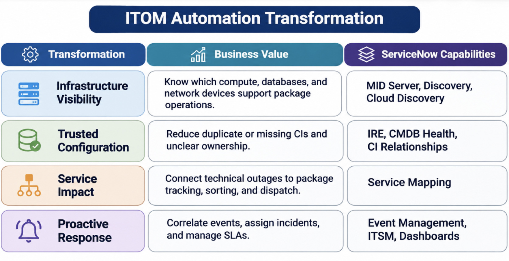
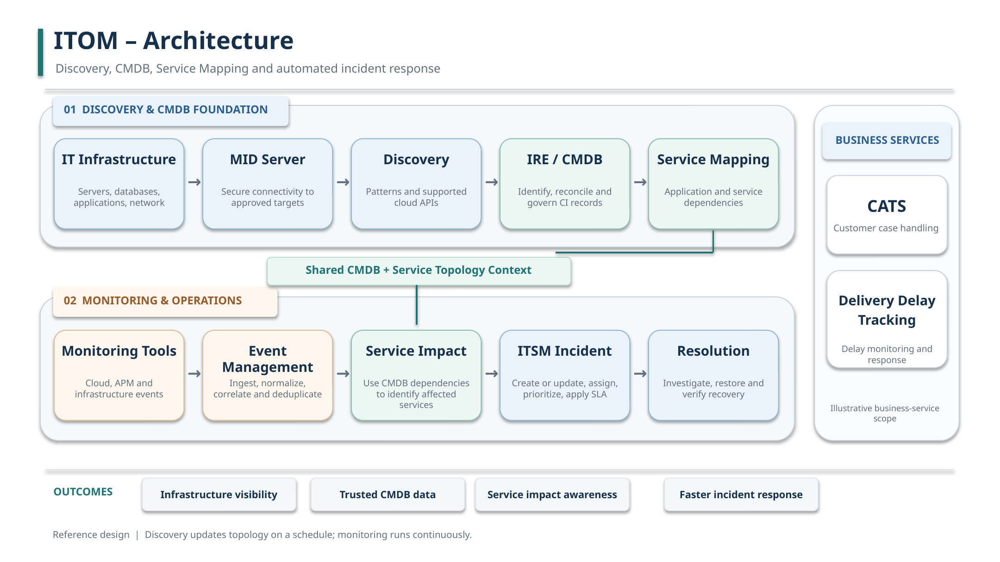
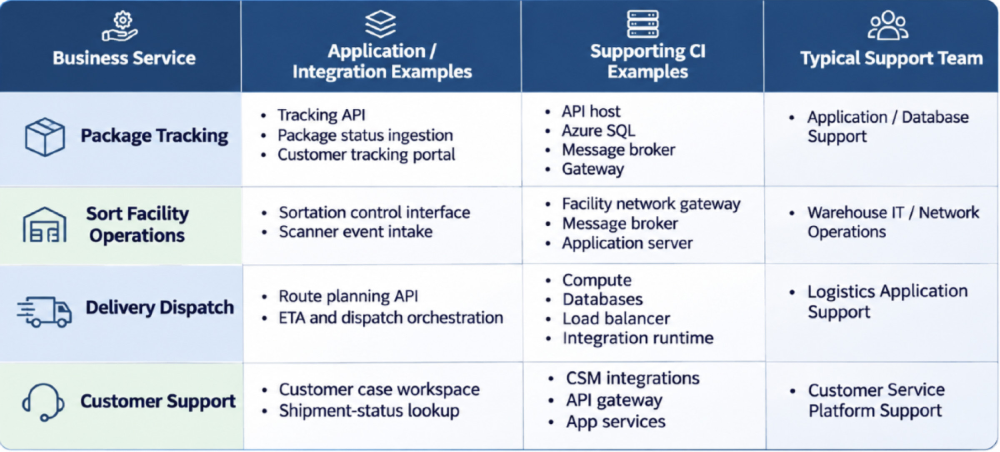
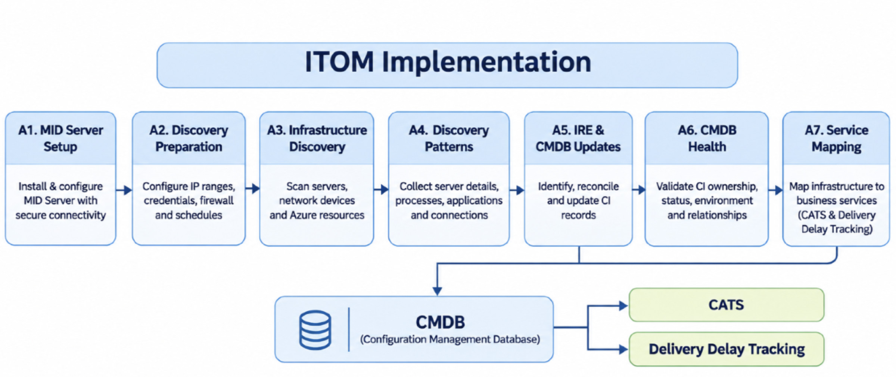
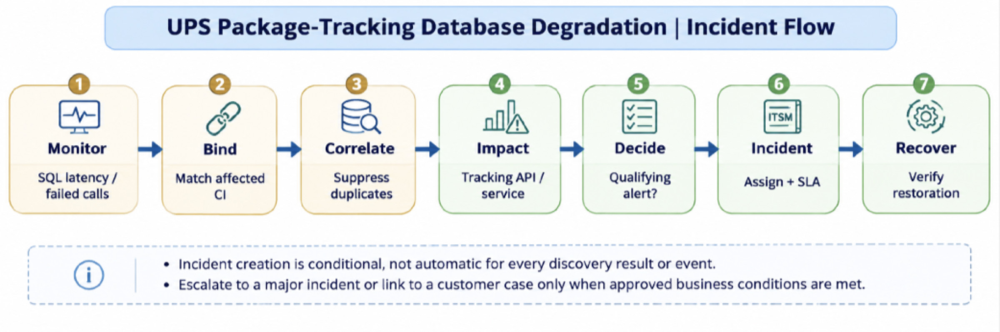
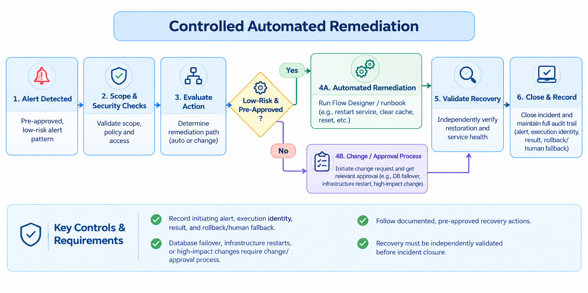
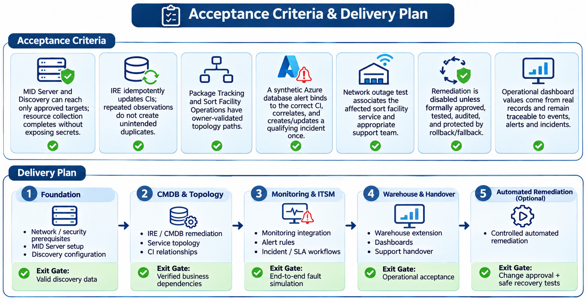

UPS Enterprise ITOM Modernization
Infrastructure Discovery, CMDB governance, Service Mapping, monitoring integration and automated ITSM response — presented as an enterprise logistics reference architecture.
Transformation Overview
UPS Logistics ServiceNow modernization, the ITOM transformation focuses on improving infrastructure visibility, CMDB accuracy, and incident management. We use MID Server and Discovery to identify infrastructure assets, while IRE keeps CMDB records accurate and avoids duplicates.
Service Mapping helps us understand how infrastructure supports Package Tracking, Warehouse Operations, and Delivery Management. By connecting Event Management with ITSM, we can detect issues early and automate incident creation and routing.
Executive overview
The objective is to connect UPS-style package movement and customer visibility services to reliable infrastructure configuration data and operational monitoring. The foundation continuously discovers authorized technical assets and maintains CMDB ownership/dependencies; an independent event pipeline detects degradation and routes actionable incidents with business context.

Enterprise architecture

Architecture rule: Discovery is scheduled or change-triggered. Event Management continuously consumes monitoring events. They share CMDB and mapped service context but Discovery itself does not initiate incidents.
UPS logistics service model

MID Server, Discovery and CMDB foundation

| Step | Implementation Activity | Validation Evidence |
|---|---|---|
| A1 | Install MID Server on an approved Windows/Linux host in an enterprise or reachable Azure connectivity zone; configure outbound TLS. | MID Server Up; validated capabilities; ECC Queue healthy |
| A2 | Confirm approved target networks, credential aliases, firewalls, roles, schedules, and Discovery behaviors. | Approved scopes and least-privilege access |
| A3 | Run IP-based horizontal Discovery for supported internal hosts and network devices; use supported Azure API or cloud discovery for managed services | Discovery Status, pattern logs, cloud resource IDs. |
| A4 | Patterns collect processes, technology attributes, and connection evidence. | Observed host/application evidence. |
| A5 | Pass identification payloads through IRE; honor data-source precedence, deduplicate, and update proper CI classes. | Same logical asset maps to the same CI. |
| A6 | Validate CI ownership, environment, status, last-seen date, and dependency relationships | CMDB Health and relationship checks. |
| A7 | Define service entry points, map dependencies, review paths with owners, and schedule refreshes. | Mapped service-to-CI path. |
CMDB Data design and governance
| Data Entity | Illustrative Details | Control |
|---|---|---|
| Configuration Item | Database / Server / Network Device / Application Service; stable resource ID, environment, owner | Class standards and IRE identification |
| CI Relationship | Tracking API depends on database; API hosted on runtime | Validated direction and semantics |
| Service Association | Package Tracking depends on Tracking API | Service owner review |
| Operational Metadata | Support group, location/site, lifecycle, discovery source, last seen | Staleness and health score review |
Primary use case: package-tracking Database Degradation

| Stage | Event and Automation Behavior | Output |
|---|---|---|
| Detect | Azure Monitor detects sustained database latency or failures in the tracking data path | Event with resource ID, timestamp, metric, and severity |
| Bind | Event Management resolves the monitoring identifier to the governed database CI | Associated configuration item |
| Correlate | Normalize and group related notifications; suppress duplicate symptoms. | Actionable alert |
| Impact | Use verified relationships to determine whether Tracking API and Package Tracking are at risk. | Service-impact summary |
| Decide | Alert-management rule checks severity, ownership, exclusions, and existing active incident. | Create new or update linked incident |
| Respond | Incident receives CI, service, assignment group, impact/urgency, calculated priority, and SLA. | Database Support investigates |
| Recover | Owner validates restoration, monitors clear, and closes under approved control. | Auditable recovery |
A monitored sorting center gateway loses connectivity. Network monitoring forwards the event, Event Management binds the network CI, and Service Mapping identifies potential impact to scanner intake / Sort Facility Operations. A qualifying incident routes to Network Operations or site IT. If the outage affects major package-processing capacity, the incident may be escalated under the approved major-incident criteria.

For a pre-approved, low-risk alert pattern, a Flow Designer or integration runbook can execute a documented recovery action after scope and security checks. It must record the initiating alert, execution identity, result, and rollback/human fallback. Database failover, infrastructure restarts, or changes with significant blast radius require the relevant change/approval process. Recovery must be independently validated before incident closure.
Integration Interfaces and Security
| Interface / Component | Typical Mechanism | Security / Operability |
|---|---|---|
| MID Server → Instance | Outbound HTTPS/TLS and ECC Queue | MID capability and health checks; no general inbound connection required |
| Discovery → Targets | WMI/SSH/SNMP and supported patterns | Approved scope, least privilege, credential vault |
| Azure Resource Inventory | Supported cloud/API discovery | Cloud identity, subscription/resource IDs |
| Azure Monitor → Event Management | Approved connector/API or event ingestion integration | Authentication, retries, event deduplication, logging |
| ServiceNow → ITSM/CSM | Native incident workflow, governed integrations if required | ACLs, service roles, traceable assignment, audit history |
Data quality, observability and dashboards
Discovery coverage: discovered vs. authorized targets, failed credentials and stale CIs.
CMDB governance: duplicate rate, required attribute completeness, orphan relationships, owner coverage.
Operations: event-to-alert conversion, CI binding rate, noise reduction, mean time to acknowledge/restore.
Service health: affected package services, impacted sort facilities and incidents approaching SLA breach.
Release governance: change approvals, ATF/integration regression, smoke tests, rollbacks, deployment evidence.
Operational troubleshooting playbook
| Symptom | First Checks | Escalation / Recovery |
|---|---|---|
| MID Server Down | Host process, outbound TLS/proxy, credential settings, MID validation, and ECC Queue | Platform + Network Team |
| Discovery Incomplete | Schedule range, access failures, pattern logs, target reachability | Discovery Engineering |
| Duplicate CIs | Identification rule attributes, data-source precedence, discovery identity | CMDB Governance |
| Event Cannot Bind CI | Resource ID mapping, stale CMDB record, event rule normalization | Monitoring + CMDB Teams |
| No Incident Created | Alert rule eligibility, suppression, active matching incident, access/error logs | ITSM / ITOM Operations |
| Business Impact | Service entry point and directional CI relationships | Service Owner + Service Mapping Team |
Acceptance criteria and delivery plan
MID Server and Discovery can reach only approved targets; resource collection completes without exposing secrets.
IRE idempotently updates CIs; repeated observations do not create unintended duplicates.
Package Tracking and Sort Facility Operations have owner-validated topology paths.
A synthetic Azure database alert binds to the correct CI, correlates, and creates/updates a qualifying incident once.
Network outage test associates the affected sort facility service and appropriate support team.
Remediation is disabled unless formally approved, tested, audited, and protected by rollback/fallback.
Operational dashboard values come from real records and remain traceable to events, alerts and incidents.

| Phase | Scope | Exit Gate |
|---|---|---|
| 1 | Network/security prerequisites, MID Server, and Discovery configuration | Valid Discovery data |
| 2 | IRE / CMDB remediation and service topology | Verified business dependencies |
| 3 | Monitoring integration, alert rules, and Incident / SLA workflows | End-to-end fault simulation |
| 4 | Warehouse extension, dashboards, and support handover | Operational acceptance |
| 5 | Optional automated remediation | Change approval and safe recovery tests |